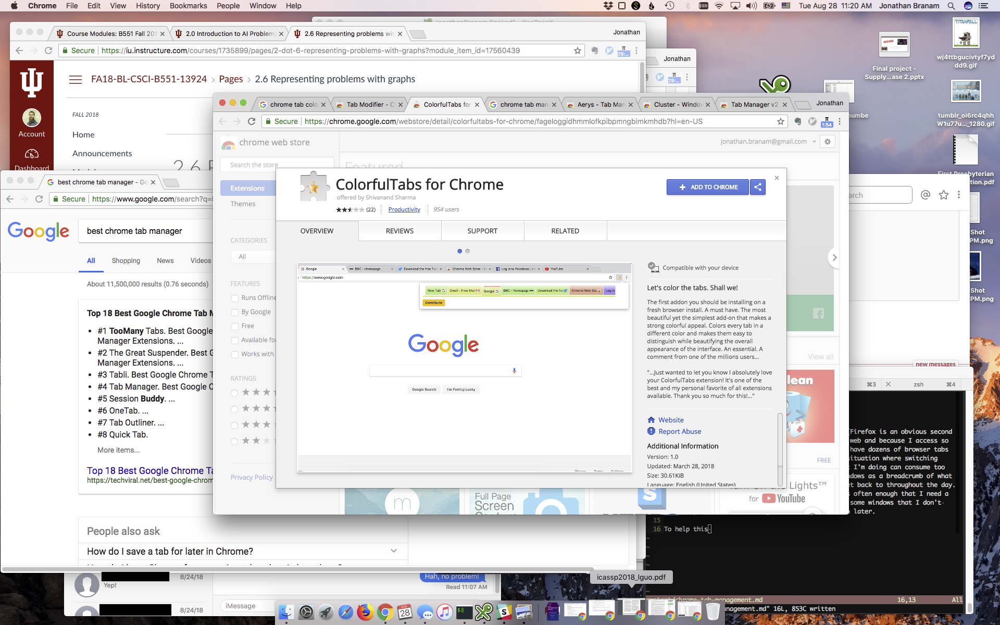

I prefer Google Chrome for everything I do online (Firefox is an obvious second choice). Because so much information is now on the web and because I access so many applications through my browser, I can easily have dozens of browser tabs and windows open at the same time. This creates a situation where switching between the windows and tabs to find and track what I'm doing can consume too much of my time. I often use a trail of browser windows as a breadcrumb of what I have been working on and things that I need to get back to throughout the day. This isn't a good management method, but it happens often enough that I need a better solution to manage it. I generally minimize some windows that I don't currently need but that I might want to get back to later.
My screen often looks like this, or worse:

To help this situation I am trying to find a way to color the Chrome tabs and/or to use a tab manager to help organize my work. But I can't find a colorizer!
Tab managers: